Betans minsta förtroendeyta (#757)
Beslutet säger vad: «Kontakt» (från BYD_CONTACT, utelämnas utan) och versionen ur /health.release på inloggningskortet och Mina spel, och en mening om vad som sparas där en gäst ansluter eller sparar. Det som återstår är var sidfoten står. Versionen i bilderna är påhittad.
I dag
Inloggningen
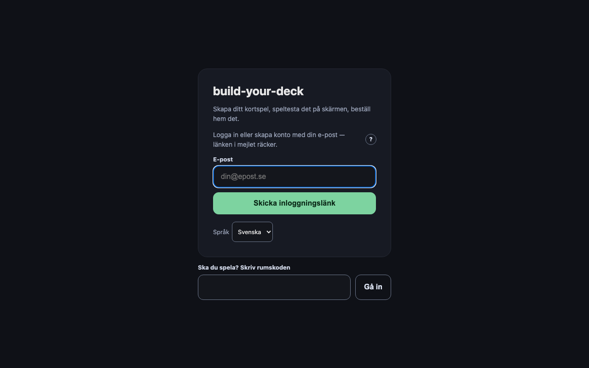
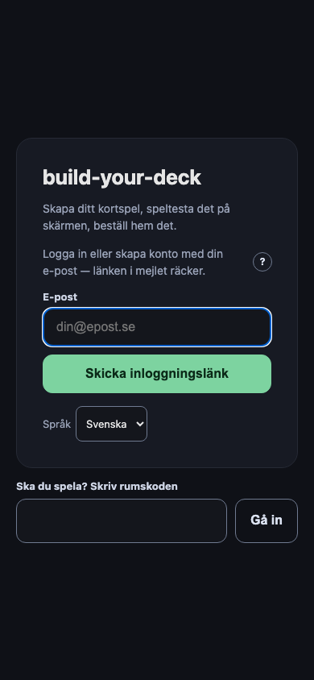
Mina spel
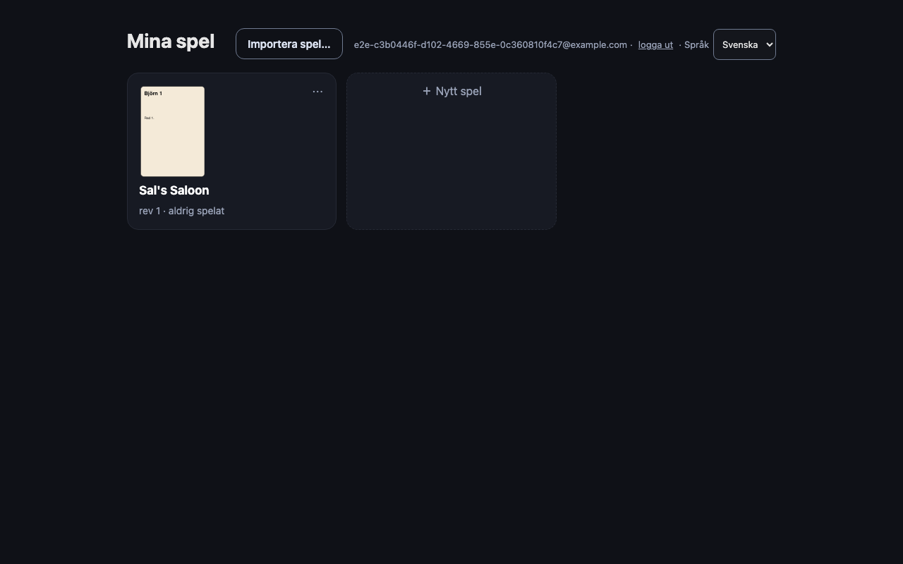
A — i kortets och sidans eget innehåll (rekommenderad)
En tyst rad sist i inloggningskortet och sist på Mina spel. Följer innehållet, tar ingen höjd från något annat, och syns där man redan läser.
Inloggningen
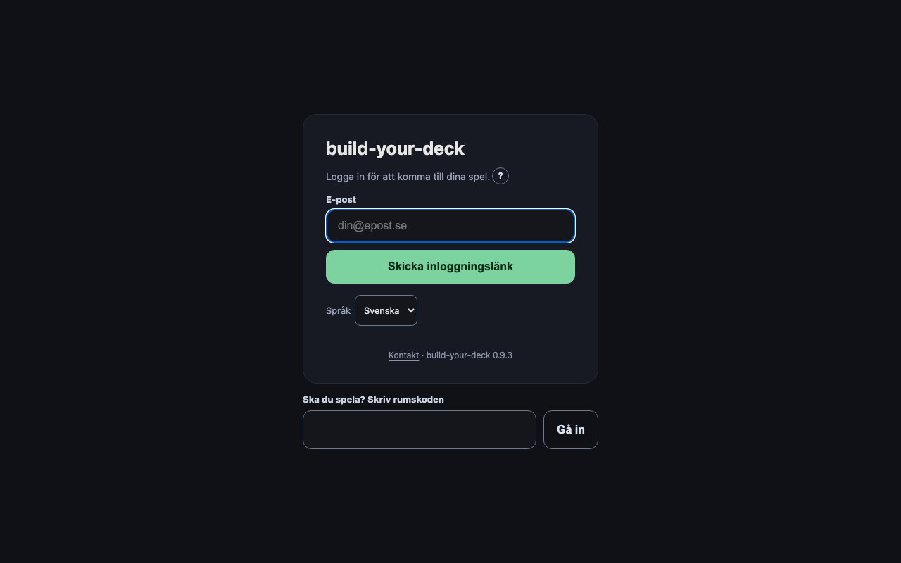
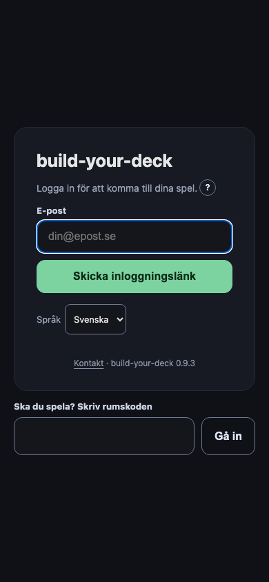
Mina spel
B — en fast sidfot längst ned i fönstret
Alltid synlig, som en webbplats sidfot. Kostar en rad av varje fönster och ligger över innehåll som rullar under den på telefonen.
Inloggningen
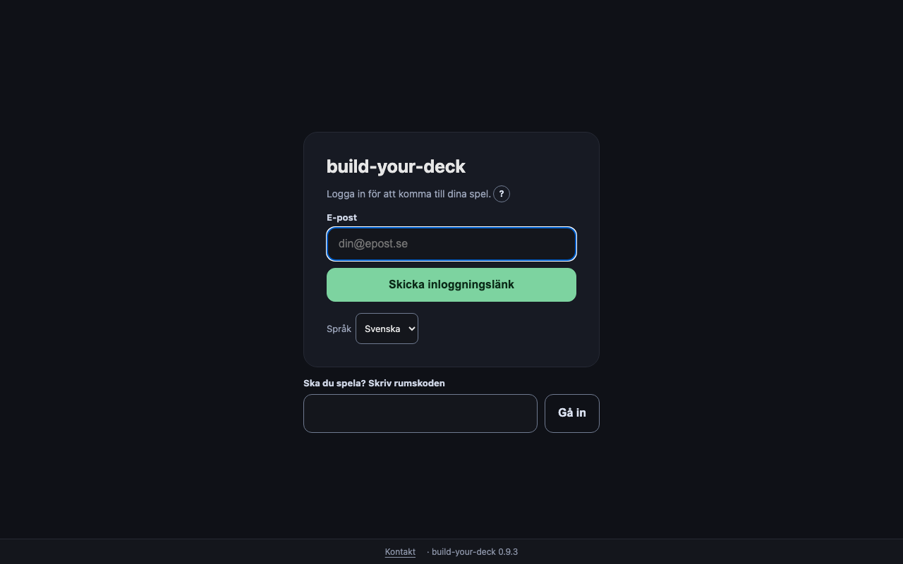
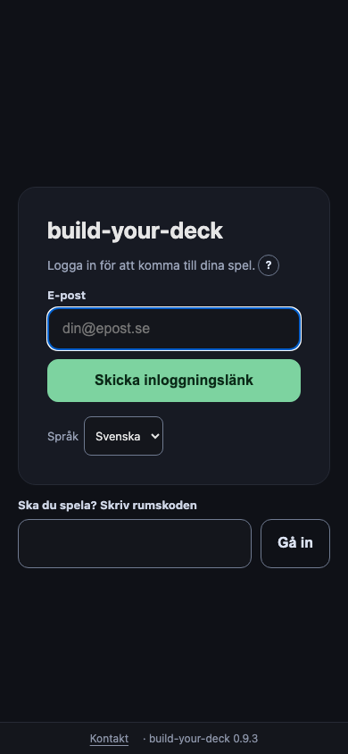
Mina spel
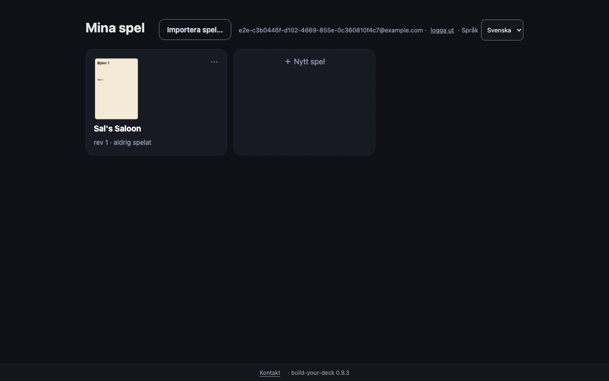
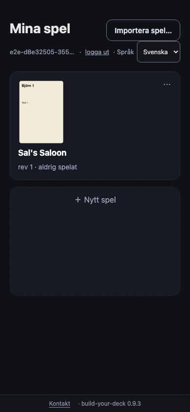
Gästens mening (samma i båda)
Under namnfältet där en gäst ansluter, och på samma sätt vid enkätens «Spara till ditt konto».
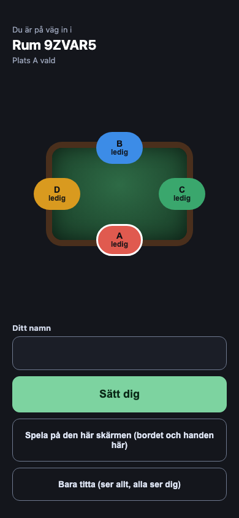
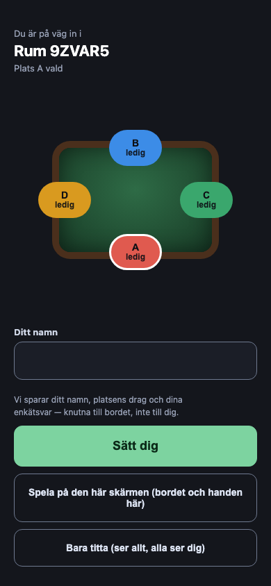